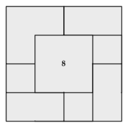

ÜST ÜSTE GELEN KARELER PROBLEMİ

8 birbirine eşit kare, üst üste, tabakalar halinde yerleştirilmiştir. Eğer en son yerleştirilen 8 numaralı kare ise, diğer 7 karenin hangi sıraya göre, şekilde gösterildiği gibi, üst üste yerleştirildiğini bulun.
Cevap: